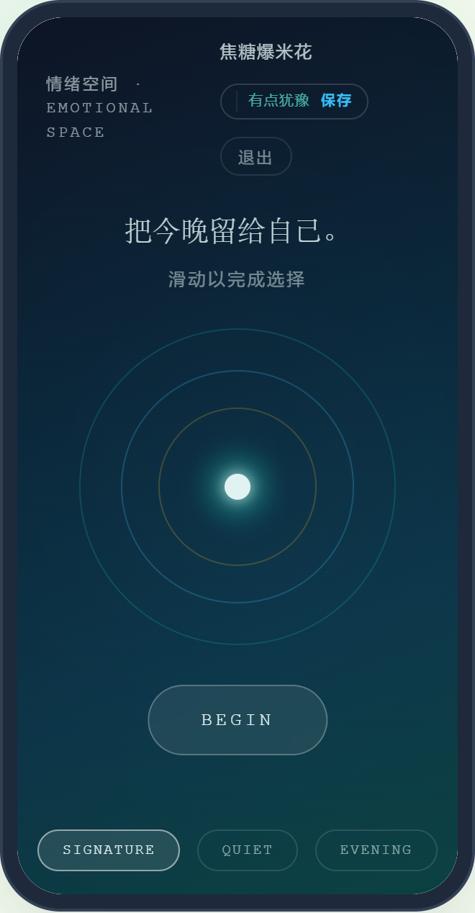

§ 02
四个时刻，一次结束
圆环随滑动扩张、延迟、共振、超调与回弹，承认“结束”本身带有惯性。
情绪空间是产品本体，不是装饰页面。它处理的是买完之后那段没有名字的拉扯，把它变成身体能感知到的收束。
01 · RITUAL
完成仪式
圆环随你的滑动扩张、延迟响应、共振并回弹。滑动节奏由你决定，随时可回退、暂停或关闭。
02 · RESPONSE
情境回应
完成后只出现属于这一次选择的语言。它指出真实拉扯，但不判断对错，也不替你定义胜利。
03 · AFTERGLOW
延时余波
系统不立刻要求答案。食品进入“等待余波”，让时间参与判断这次选择是否真的减轻了负担。
04 · SHARED ECHOES
同类回声
只有当你完成自身的余波之后，系统才展示同类的匿名经验。先听见自己，再听见别人。
§ 03
三层圆环分解
内环扩张、中环延迟、外环共振，加上超调与回弹，最后是释放。
超调承认结束不会一次到位，回弹承认结束带有惯性。它们不是 bug，而是把一个心理过程如实呈现出来。
明确不做
情绪空间没有积分、没有连续打卡、没有“完成次数越多越好”。一次结束就是一次结束，它不会变成需要维持的记录。
PRODUCT PROOF · 来自真实竞赛演示
这不是提交按钮，而是结束一次选择的空间。
截图来自 官方演示数据。用户已经选择了自己的方向，情绪空间不评价选择正确与否，它通过动作、节奏和回应制造结束感。

EMOTIONAL SPACE
前台不展示健康分数
用户已经选择了自己的方向。情绪空间不评价选择正确与否，它通过动作、节奏和回应制造结束感。后台理解复杂语境，前台只呈现可触的收束。
明确不做 不展示积分、不展示健康评分、不展示排名。一次结束就是一次结束，它不会变成需要维持的记录。
官方演示数据本地审核示例非实时社区
§ 04
来到这里，理解什么
情绪空间是产品本体，不是装饰页面；用户始终保有控制权。
它是什么
一个可触的结束
拉扯是抽象的，圆环是具体的。情绪空间把心理过程转译成可以被身体感知的收束动作。
边界在哪
控制权始终在你
滑动节奏、是否完成、何时关闭，都由你决定。系统不评判，也不把结束变成需要打卡维持的事。